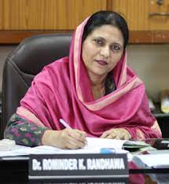
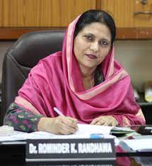

Guru Tegh Bahadur Institute of Technology has following 6 branches:
- Artificial Intelligence Machine Learning
- Artificial Intelligence Data Science
- Computer Science and Engineering
- Information Technology
- Electronics and Connunication Technology
- Electrical and Electronics Engineering
 
